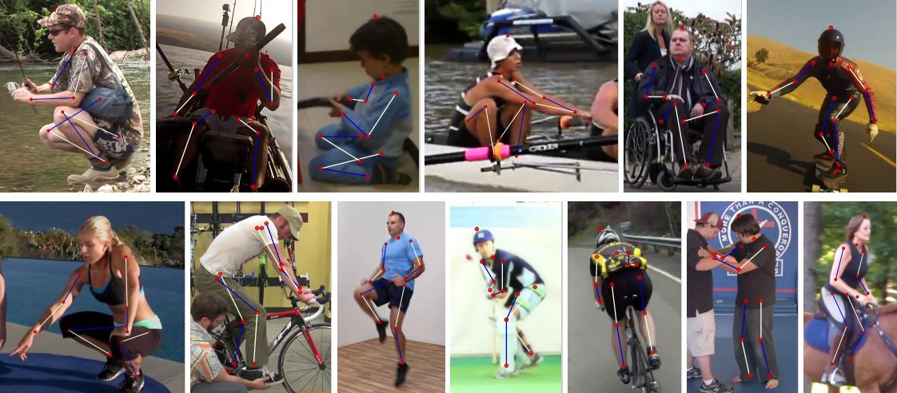

PROJECTS
Comparing Transfer and Meta Learning Approaches on a Unified Few-Shot Classification Benchmark
Vincent Dumoulin, Neil Houlsby, Utku Evci, Xiaohua Zhai, Ross Goroshin, Sylvain Gelly, Hugo Larochelle
Submission
[paper]
This work presents a unified benchmark for few-shot learning and transfer learning. Popular methods from both communities are compared.
PROJECTS
An Analysis of Object Representations in Deep Visual Trackers
Ross Goroshin, Jonathan Tompson, Debidatta Dwibedi
Submission
[paper]
In this work we performed an in-depth analysis of a popular tracking architecture and suggested a novel architecture to mitigate saliency biases.
Meta-dataset: A dataset of datasets for learning to learn from few examples
Eleni Triantafillou, Tyler Zhu, Vincent Dumoulin, Pascal Lamblin, Utku Evci, Kelvin Xu, Ross Goroshin, Carles Gelada, Kevin Swersky, Pierre-Antoine Manzagol, Hugo Larochelle
Submission ICLR 2020
[paper]
[code]
In this work we propose Meta-Dataset, a new benchmark for training and evaluating models that is large-scale, consists of diverse datasets, and presents more realistic tasks.
Vector-based navigation using grid-like representations in artificial agents
Andrea Banino, Caswell Barry, Benigno Uria, Charles Blundell, Timothy Lillicrap, Piotr Mirowski, Alexander Pritzel, Martin J Chadwick, Thomas Degris, Joseph Modayil, Greg Wayne, Hubert Soyer, Fabio Viola, Brian Zhang, Ross Goroshin, Neil Rabinowitz, Razvan Pascanu, Charlie Beattie, Stig Petersen, Amir Sadik, Stephen Gaffney, Helen King, Koray Kavukcuoglu, Demis Hassabis, Raia Hadsell, Dharshan Kumaran
Nature 2018
[paper]
We set out to leverage the computational functions of grid cells to develop a deep reinforcement learning agent with mammal-like navigational abilities.
Learning to navigate in complex environments
Piotr Mirowski, Razvan Pascanu, Fabio Viola, Hubert Soyer, Andrew J Ballard, Andrea Banino, Misha Denil, Ross Goroshin, Laurent Sifre, Koray Kavukcuoglu, Dharshan Kumaran, Raia Hadsell
ICLR 2017
[paper]
In this work we formulate the navigation question as a reinforcement learning problem and show that data efficiency and task performance can be dramatically improved by relying on additional auxiliary tasks leveraging multimodal sensory inputs.
Stacked What-Where Auto-encoders
Junbo Zhao, Michael Mathieu, Ross Goroshin, Yann LeCun
ICLR 2016
[paper]
We present a novel architecture, the stacked what-where auto-encoders (SWWAE), which integrates discriminative and generative pathways and provides a unified approach to supervised, semi-supervised and unsupervised learning without relying on sampling during training.
Unsupervised Feature Learning in Computer Vision
Ross Goroshin
NYU PhD dissertation 2015
[paper]
This work aims to uncover the principles that lead to these generic feature representations in the unsupervised setting, which does not require problem specific label information.

Learning to linearize under uncertainty
R Goroshin, MF Mathieu, Y LeCun
Advances in NIPS 2015
[paper]
In this work we suggest a new architecture and loss for training deep feature hierarchies that linearize the transformations observed in unlabeled natural video sequences.
Unsupervised learning of spatiotemporally coherent metrics
Ross Goroshin, Joan Bruna, Jonathan Tompson, David Eigen, Yann LeCun
ICCV 2015
[paper]
We focus on feature learning from unlabeled video data, using the assumption that adjacent video frames contain semantically similar information. We establish a connection between slow feature learning and metric learning.

Efficient Object Localization Using Convolutional Networks
Jonathan Tompson, Ross Goroshin, Arjun Jain, Yann LeCun, Christoph Bregler
CVPR 2015
[paper]
[predictions_flic]
[predictions_mpii]
A novel cascaded architecture to help overcome the effects of MaxPooling and a modified dropout that works better in the presence of spatially-coherent activations. Achieved SoTA in human body tracking.
Turked MPII images containing one person: [data].
Saturating auto-encoders
Ross Goroshin, Yann LeCun
2013
[paper]
We introduce a simple new regularizer for auto-encoders (SATAE) whose hidden-unit activation functions contain at least one zero-gradient (saturated) region.
Unsupervised Feature Learning from Temporal Data
Ross Goroshin, Joan Bruna, Jonathan Tompson, Arthur Szlam, David Eigen, Yann LeCun
ACCV 2014
[paper]
A sparse auto-encoder architecture to make use of temporal coherence. This formulation enables pre-training on unlabeled video data (of which there is a massive abundance), to improve ConvNet performance.
Approximate solutions to several visibility optimization problems
Ross Goroshin, Quyen Huynh, Hao-Min Zhou
Communications in Mathematical Sciences 2011
[paper]
A learning-based system for simulating Navier-Stokes Equations in real-time. We do so by reformulating the standard operator splitting method as an end-to-end network.
Tracking cables in sonar and optical imagery
Jason C Isaacs, Ross Goroshin
IEEE 2010
[paper]
In this paper we present an "upgraded" and ultimately more robust approach to line detection in images.
Obstacle detection using a monocular camera
GeorgiaTech Master's thesis 2018
[thesis]
The objective of my thesis is to develop a general obstacle segmentation algorithm for use on board a ground based unmanned vehicle (GUV).
Efficient Object Localization Using Convolutional Networks
Jonathan Tompson, Ross Goroshin, Arjun Jain, Yann LeCun, Christoph Bregler
CVPR 2015
[paper]
[predictions_flic]
[predictions_mpii]
A novel cascaded architecture to help overcome the effects of MaxPooling and a modified dropout that works better in the presence of spatially-coherent activations. Achieved SoTA in human body tracking.
Turked MPII images containing one person: [data].